화학분석기사(구) (2017-03-05 기출문제)
1과목: 일반화학
1. 어떤 물질의 화학식이 C2H2CIBr로 주어졌고, 그 구조가 다음과 같을 때에 대한 설명으로 틀린 것은?
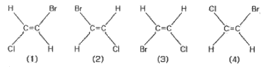
- (1)과 (2)는 동일 구조이다.
- (2)와 (4)는 동일 구조이다.
- (2)와 (3)은 기하 이성질체 관계이다.
- (3)과 (4)는 동일 구조이다.
(정답률: 86%)

2. 어떤 상태에서 탄소(C)의 전자 배치가 1s22s22px2로 나타났다. 이 전자배치에 대하여 옳게 설명한 것은?
- 들뜬 상태, 짝짓지 않은 전자 존재
- 들뜬 상태, 전자는 모두 짝지었음
- 바닥 상태, 짝짓지 않은 전자 존재
- 바닥 상태, 전자는 모두 짝지었음
(정답률: 78%)
3. 어느 실험과정에서 한 학생이 실수로 0.20M NaCI 용액 250mL를 만들었다. 그러나 실제 실험에 필요한 농도는 0.0⑤M 이었다. 0.20M NaCI 용액을 가지고 0.0⑤M NaCI 100mL를 만들려면, 100mL 부피 플라스크에 0.20M NaCI을 얼마나 넣어야 하는가?
- 2mL
- 2.5mL
- 4mL
- 5mL
(정답률: 79%)
4. 다음 반응에서 산화된 원소는?
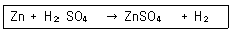
- Zn
- H
- S
- O
(정답률: 87%)
5. 황산칼슘(CaSO4)의 용해도곱(Ksp)이 2.4×10-5이다. 이 값을 이용하여 황산칼슘(CaSO4)의 용해도를 구하면? (단, 황산칼슘의 분자량은 136.2g이다)
- 1.414g/L
- 1.114g/L
- 0.667g/L
- 0.121g/L
(정답률: 67%)
6. 메탄의 연소반응이 다음과 같을 때 CH4 24g 과 반응하는 산소의 질량은 얼마인가?
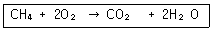
- 24g
- 48g
- 96g
- 192g
(정답률: 76%)
7. Lewis 구조 가운데 공명구조를 가지는 화합물을 옳게 나열한 것은?
- H2O, HF
- H2O, O3
- O3, NO3
- H2O, HF, O3, NO3
(정답률: 77%)
8. 이온반지름의 크기를 잘못 비교한 것은?
- Mg2+＞ Ca2+
- F-＜ O2-
- Al3+＜ Mg2+
- O2-＜ S2-
(정답률: 83%)
9. 탄화수소 화합물에 대한 설명으로 틀린 것은?
- 탄소-탄소 결합이 단일결합으로 모두 포화된 것을 alkane이라 한다.
- 탄소-탄소 결합에 이중결합이 있는 탄화수소 화합물은 alkene 이라 한다.
- 탄소-탄소 결합에 삼중결합이 있는 탄화수소 화합물은 alkyne 이라 한다.
- 가장 간단한 alkyne 화합물은 프로필렌(C3H4)이다.
(정답률: 88%)
10. Na2CO3용액에 HCl 용액을 첨가하면 다음과 같은 반응이 진행된다. 이 반응에 근거하여 Na2CO3용액의 몰농도와 노르말농도 사이의 관계를 옳게 나타낸 것은?
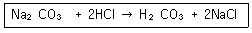
- 0.10M = 0.20N
- 0.10M = 0.10N
- 0.10M = 0.⑤N
- 0.10M = 0.01N
(정답률: 70%)
11. 용액에 관한 설명으로 틀린 것은?
- 휘발성 용매에 비휘발성 용질이 녹아있는 용액의 끓는점은 순수한 용매보다 높아진다.
- 용액은 둘 또는 그 이상의 물질로 이루어진 혼합물이다.
- 몰랄농도는 용액 1kg 당 포함된 용질의 몰수를 나타낸다.
- 몰농도는 용액 1L당 포함된 용질의 몰수를 나타낸다.
(정답률: 86%)
12. 화학평형에 대한 설명으로 틀린 것은?
- 동적평형에 있는 계에 자극이 가해지면 그 자극의 영향을 최대화하는 방향으로 평형이 변화한다.
- 정반응이 발열반응이면 반응온도를 낮추면 평형상수가 증가한다.
- 평형상태에 있는 기체 반응혼합물을 압축하면 반응은 기체분자의 수를 감소시키는 방향으로 진행된다.
- 촉매는 반응혼합물의 평형조선에 영향을 주지 않는다.
(정답률: 75%)
13. 다음 중 실험식이 다른 것은?
- CH2O
- C2H6O2
- C6H12O6
- C3H6O3
(정답률: 88%)
14. 입체이성질체의 대표적인 2가지 형태 중 하나에 해당하는 것은?
- 배위이성질체
- 기하이성질체
- 결합이성질체
- 이온화이성질체
(정답률: 86%)
15. 다음 중 벤젠의 유도체가 아닌 것은?
- 벤조산
- 아닐린
- 페놀
- 헵테인
(정답률: 83%)
16. 철근이 녹이 슬 때 질량은 어떻게 되겠는가?
- 녹슬기 전과 질량 변화가 없다.
- 녹슬기 전에 비해 질량이 증가한다.
- 녹이 슬면서 일정 시간 질량이 감소하다가 일정하게 된다.
- 녹슬기 전에 비해 질량이 감소한다.
(정답률: 83%)
17. 다음 방향족 화합물 구조의 명칭에 해당하는 것은?
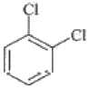
- ortho-dichlorobenzene
- meta-dichlorobenzene
- para-dichlorobenzene
- delta-dichlorobenzene
(정답률: 86%)
18. 0.120mol 의 HC2H3O2와 0.140mol 의 NaC2H3O2가 들어 있는 1.00L 용액의 pH를 계산하면 얼마인가? (단, Ka = 1.8×10-5이다)
- 3.82
- 4.82
- 5.82
- 6.82
(정답률: 72%)
19. 0℃, 1atm에서 0.495g 의알루미늄이 모두 반응할 때 발생되는 수소 기체의 부피는 약몇 L 인가?
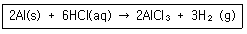
- 0.033
- 0.308
- 0.424
- 0.616
(정답률: 67%)
20. 산과 염기에 대한 다음 설명 중 틀린 것은?
- 산은 수용액 중에서 양성자(H+, 수소 이온)를 내놓는 물질을 지칭한다.
- 양성자를 주거나 받는 물질로 산과 염기를 정의하는 것은 브뢴스테드에 의한 산염기의 개념이다.
- 산과 염기의 세기는 해리도를 통해 가늠할 수 있다.
- 아레니우스에 의한 산의 정의는 물에서 해리되어 수산화 이온을 내놓는 물질이다.
(정답률: 85%)
2과목: 분석화학
21. 다음 중 질량의 SI 단위는?
- mg
- g
- kg
- ton
(정답률: 82%)
22. 0.10M NaCl 용액 속에 PbI2가 용해되어 생성된 Pb2+(원자량 207.0g/mol) 농도는 약 얼마인가? (단, PbI2의 용해도곱상수는 7.9×10-9이고 이온세기가 0.10M 일 때 Pb2+과 I-의 활동도계수는 각각 0.36과 0.75이다.)
- 33.4mg/L
- 114.0mg/L
- 253.0mg/L
- 443.0mg/L
(정답률: 37%)
23. 칼슘이온 Ca2+을 무게분석법을 활용하여 정량하고자 한다. 이 때 효과적으로 사용할 수 있는 음이온은?
- C2O42-
- SO42-
- CI-
- SCN-
(정답률: 66%)
24. HCl 용액을 표준화하기 위해 사용한 Na2CO3가 완전히 건조되지 않아서 물이 포함되어 있다면 이것을 사용하여 제조된 HCl 표준용액의 농도는?
- 참값보다 높아진다.
- 참값보다 낮아진다.
- 참값과 같아진다.
- 참값의 1/2이 된다.
(정답률: 80%)
25. 다음 중 화학평형에 대한 설명으로 옳은 것은?
- 화학평형상수는 단위가 없으면, 보통 K로 표시하고 K가 1보다 크면 정반응이 유리하다고 전의하며, 이때 Gibbs 자유에너지는 양의 값을 가진다.
- 평형상수는 표준상태에서의 물질의 평형을 나타내는 값으로 항상 양의 값이며, 온도에 관계없이 일정하다.
- 평형상수의 크기는 반응속도와는 상관이 없다. 즉, 평형상수가 크다고 해서 반응이 빠름을 뜻하지 않는다.
- 물질의 용해도곱(solubility product)은 고체염이 용액 내에서 녹아 성분 이온으로 나뉘는 반응에 대한 평형상수로 흡열반응은 용해도곱이 작고, 발열반응은 용해도곱이 크다.
(정답률: 74%)
26. 화학평형상수 값은 다음 변수 중에서 어느 값의 변화에 따라 변하는가?
- 반응물의 농도
- 온도
- 압력
- 촉매
(정답률: 64%)
27. 일차 표준물질(primary standard)에 대한 설명으로 틀린 것은?
- 순도가 99.9% 이상이다.
- 시약의 무게를 재면 곧바로 사용할 수 있을 정도로 순수하다.
- 일상적으로 보관할 때 분해되지 않는다.
- 가열이나 진공으로 건조시킬 때 불안정하다.
(정답률: 80%)
28. 다음 각각의 용액에 1M의 HCl을 2mL씩 첨가하였다. 어떤 용액이 가장 작은 pH 변화를 보이겠는가?
- 0.1M NaOH 15mL
- 0.1M CH3COOH 15mL
- 0.1M NaOH 30mL와 0.1M CH3COOH 30mL 의 혼합용액
- 0.1M NaOH 30mL와 0.1M CH3COOH 60mL의 혼합용액
(정답률: 64%)
29. 2.00μmol의 Fe2+이온이 Fe3+이온으로 산화되면서 발생한 전자가 1.5V의 전위차를 가진 장치를 거치면서 수행할 수 있는 최대일의 양은 약 몇 J 인가?
- 29J
- 2.9J
- 0.29J
- 0.029J
(정답률: 52%)
30. EDTA(etylenediaminetetraacetic acid, H4Y)를 이용한 금속 Mn+적정으로 조건 형성상수(conditional formation constant) Kf´ 에 대한 설명으로 틀린 것은? (단, Kf는 형성상수이다.)
- EDTA(H4Y)화학종중 [Y4-]의 농도 분율을 αY4-로 나타내면, αY4-=[Y4-]/[EDTA]이고 Kf´=αY4-Kf이다.
- Kf´ 는 특정한 pH에서 MYn-4의 형성을 의미한다.
- Kf´ 는 pH가 높을수록 큰 값을 갖는다.
- Kf´ 를 이용하면 해리된 EDTA의 각각의 이온농도를 계산할 수 있다.
(정답률: 59%)
31. 산화ㆍ환원 지시약에 대한 설명 중 틀린 것은? (단, E°는 표준환원전위, n은 전자수이다.)
- 지시약은 주로 이중 결합들이 콘주게이션(conjugated)된 유기물이다.
- 변색범위는 주로
 이다.
이다. - 당량점에서의 전위와 지시약의 표준환원전위(E°)가 비슷한 것을 사용해야 한다.
- 분석하고자 하는 이온과 결합했을 때 산화된 상태와 환원된 상태의 색이 달라야 한다.
(정답률: 80%)
32. 20.00mL의 0.1000M Hg22+를 0.1000M Cl-로 적정하고자 한다. Cl-를 40.00mL 첨가 하였을 때, 이 용액 속에서 Hg22+의 농도는 약 얼마인가? (단, Hg2Cl2(s) ⇆ Hg22+(aq) +2Cl-(aq), KSP=1.2×10-18이다.)
- 7.7×10-5M
- 1.2×10-6M
- 6.7×10-7M
- 3.3×10-10M
(정답률: 58%)
33. 다음 중 KMnO4와 H2O2의 산화환원 반응식을 바르게 나타낸 것은?
- MnO4- + 2H2O2 + 4H+ → MnO2 + 4H2O + O2
- 2MnO4- + 2H2O2 → 2MnO + 2H2O + 2O2
- 2MnO4- + 5H2O2 + 6H+ → 2Mn2+ + 8H2O + 5O2
- 2MnO4- + 5H2O2 → 2Mn2+ + 5H2O +13/2 O2
(정답률: 71%)
34. 다음 표에서 약 염기성 용액을 강산 용액으로 적정할 때 적합한 지시약과 적정이 끝난 후에 용액의 색깔을 옳게 나타낸 것은?
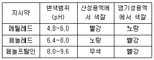
- 메틸레드, 빨강
- 메틸레드, 노랑
- 페놀프탈레인, 빨강
- 페놀레드, 빨강
(정답률: 80%)
35. 다음과 같은 선표기법으로 나타내어진 전기화학전지에 관한 설명으로 틀린 것은?
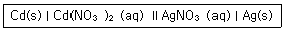
- Cd(s)는 산화되었다.
- Ag+aq)는 환원되었다.
- 두 개의 염다리가 쓰였다.
- 이 전지에서 전자는 Cd(s)로부터 나와서 Ag(s)로 이동한다.
(정답률: 84%)
36. 금속착화합물(metal complex)에서 금속이온과 리간드간의 결합 형태는 무엇인가?
- 금속결합
- 이온결합
- 수소결합
- 배위결합
(정답률: 83%)
37. 증류수에 Hg2IO3)2로 포화시킨 용액에 KNO3 같은 염을 첨가하면 용해도가 증가한다. 이를 설명할 수 있는 요인으로 가장 적합한 것은?
- 가리움 효과
- 착물형성
- 르샤틀리에의 원리
- 이온세기
(정답률: 47%)
38. EDTA 적정 시 pH가 높은 경우에는 EDTA를 넣기 전에 수산화물인 M(OH)n전물이 형성되는 경우가 있으며 이런 경우에는 많은 오차가 발생한다. 다음 중 이를 방지하기 위한 가장 적절한 방법은?
- pH를 낮춘다.
- 적정 전에 용액을 끓인다.
- 침전물을 거른 후 적정한다.
- 암모니아 완충용액을 가한다.
(정답률: 67%)
39. 다음 [표]의 표준 환원 전위를 참고할 때 다음 중 가장 강한 산화제는?
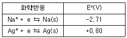
- Na+
- Ag+
- Na(s)
- Ag(s)
(정답률: 79%)
40. 25℃에서 100mL의 물에 몇 g의 Ag3AsO4가 용해될 수 있는가? (단, 25℃에서 Ag3AsO4의 Ksp=1.0×10-22, Ag3AsO4의 분자량 : 462.53g/mol이다.)
- 6.42×10-4g
- 6.42×10-5g
- 4.53×10-9g
- 4.53×10-10g
(정답률: 50%)
3과목: 기기분석I
41. NMR 기기에서 표준물로 사용되는 것은?
- 아세토니트릴
- 테트라메틸실란(TMS)
- 폴리스티렌-디 비닐 벤젠
- 8-히드록시 퀴놀린(8-HQ)
(정답률: 86%)
42. 다음 보기에서 삼중결합 진동모드를 관찰할 수 있는 분자는?
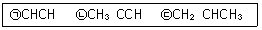
- ㉠
- ㉡
- ㉠, ㉡
- ㉠, ㉡, ㉢
(정답률: 56%)
43. 양성자와 13C 원자사이에 짝풀림을 하는 여러 가지 방법이 있다. 13C NMR에 이용하는 짝풀림이 아닌 것은?
- 넓은 띠 짝풀림
- 공명 비킴 짝풀림
- 펄스 배합 짝풀림
- 자기장 잠금 짝풀림
(정답률: 59%)
44. 나트륨 D라인의 파장은 589nm이다. 이 광선이 굴절률 1.09인 매질을 지날 때 ㉠이 광선의 에너지, ㉡주파수(frequency)를 각각 구한 값으로 옳은 것은? (단, 프랭크상수 h = 6.627×10-34Jㆍsec, 광속 с=2.99×108m/sec이다.)(오류 신고가 접수된 문제입니다. 반드시 정답과 해설을 확인하시기 바랍니다.)
- ㉠3.66×10-19J, ㉡6.04×1014Hz
- ㉠3.66×10-19J, ㉡5.54×1014Hz
- ㉠3.36×10-19J, ㉡5.08×1014Hz
- ㉠3.36×10-19J, ㉡4.66×1014Hz
(정답률: 49%)
45. 광학기기의 구성이 각 분광법과 바르게 짝지어진 것은?
- 흡수분광법 ; 시료→파장선택기→검출기→기록계→광원
- 형광분광법 ; 광원→시료→파장선택기→검출기→기록계
- 인광분광법 ; 광원→시료→파장선택기→검출기→기록계
- 화학발광법 ; 광원과 시료→파장선택기→검출기→기록계
(정답률: 68%)
46. 분광분석기기에서 단색화 장치에 대한 설명으로 가장 거리가 먼 것은?
- 연속적으로 단색광의 빛을 변화하면서 주사하는 장치이다.
- 분석하려는 성분에 맞는 광을 만드는 역할을 한다.
- 필터, 회절발 및 프리즘 등을 사용한다.
- 슬릿은 단색화장치의 성능특성과 품질을 결정하는데 중요한 역할을 한다.
(정답률: 44%)
47. NMR 스펙트럼의 1차 스펙트럼 해석에 대한 규칙의 설명으로 틀린 것은?
- 동등한 핵들은 다중 흡수 봉우리를 내주시 위하여 서로 상호작용하지 않는다.
- 짝지움 상수는 네 개의 결합길이보다 큰 거리에서는 짝지움이 거의 일어나지 않는다.
- 띠의 다중도느느 이웃 원자에 있는 자기적으로 동등한 양성자의 수(n)dp 의해 결정되며, n으로 주어진다.
- 짝지움 상수는 가해준 자기장에 무관하다.
(정답률: 56%)
48. 어떤 금속(M)-리간드(L) 착화합물의 해리는 다음과 같이 진행된다. (전하 생략) : ML2 ＞ M + 2LM농도가 2.30×10-5M이고 과량의 L을 가하여 모든 M이 착물(ML2)로 존재할 때 흡광도(A)가 0.780이었다. 같은 양의 M을 화학양론적 양의 L과 혼합한 용액의 흡광도(A)가 0.520이었다면 이 때, 착화합물의 해리도(%)는 얼마인가?
- 66.5
- 33.5
- 16.8
- 1.68
(정답률: 35%)
49. 불꽃 원자화와 비교한 유도결합 플라스마 원자화에 대한 설명으로 옳은 것은?
- 이온화가 적게 일어나서 감도가 더 높다.
- 자체흡수효과가 많이 일어나서 감도가 더 높다.
- 자체반전효과가 많이 일어나서 감도가 더 높다.
- 고체상태의 시료를 그대로 분석할 수 있다.
(정답률: 60%)
50. 원자 분광법에서 용액 시료의 도입 방법이 아닌 것은?
- 초음파 분무기
- 기체 분무기
- 글로우 방전법
- 수소화물 발생법
(정답률: 69%)
51. 불꽃, 전열, 플라스마 원자화 장치의 특징에 대한 설명으로 틀린 것은?
- 플라스마의 경우 원자화 온도는 보통 4000~6000℃ 정도 이다.
- 불꽃원자화는 재현성은 좋으나 시료효율, 감도는 좋지 않다.
- 전열원자화 장치가 불꽃 원자화 장치보다 많은 양의 시료를 필요로 한다.
- 전열원자화 장치의 경우 중앙에 구멍이 있는 원통형 흑연관에서 원자화가 일어난다.
(정답률: 73%)
52. 다음 1H-핵자기공명(NMR)스펙트럼의 화학적 이동(chemical shift)에 대한 설명 중 옳지 않은 것은?
- 외부자기장 세기가 클수록 화학적이동(δ, ppm)은 커진다.
- 가리움이 적을수록 낮은 자기장에서 봉우리가 나타난다.
- 300MHz NMR로 얻은 화학적이동(Hz)은 200MHz NMR로 얻은 화학적이동(Hz)보다 크다.
- 화학적 이동은 편재 반자기 전류효과 때문에 나타난다.
(정답률: 51%)
53. 0.5nm/mm의 역선 분사능을 갖는 회절발 단색화 장치를 사용하여 480.2nm와 480.6nm의 스펙트럼선을 분리하려면 이론상 필요한 슬릿나비는 얼마인가?
- 0.2mm
- 0.4mm
- 0.6mm
- 0.8mm
(정답률: 40%)
54. 원자 X선 분광법 중 고체 시료에 들어 있는 화합물에 대한 정성 및 정량적인 정보를 제공해 주고, 결정성 물질의 원자 배열과 간격에 관한 정보를 제공해 주는 방법은?
- X-선 형광법
- X-선 회절법
- X-선 흡수법
- X-선 방출법
(정답률: 76%)
55. IR 변환기의 종류가 아닌 것은?
- thermocouple
- pyroelectric detector
- photodiode array(PDA)
- photo-conducing detector
(정답률: 49%)
56. 형광(Fluorescence)에 대한 설명으로 가장 옳은 것은?
- σ*→σ 전이에서 주로 발생한다.
- pyridine, furan 등 간단한 헤테로 고리화합물은 접합고리구조를 갖는 화합물보다 형광을 더 잘 발생한다.
- 전형적으로 형광은 수명이 약 10-10~10-5s 정도이다.
- 250nm이하의 자외선을 흡수하는 경우에 형광을 방출한다.
(정답률: 66%)
57. 원자분광법에서 원자선 나비는 여러 가지요인들에 의해서 넓힘이 일어난다. 선 넓힘의 원인이 아닌 것은?
- 불확정성효과
- 지만(Zeeman)효과
- 도플러(D0ppler)효과
- 원자들과의 충돌에 의한 압력효과
(정답률: 61%)
58. 빛의 흡수와 발광(luminescence)을 측정하는 장치에서 두드러진 차이를 보이는 분광기 부품은?
- 광원
- 시료 용기
- 검출기
- 단색화 장치
(정답률: 65%)
59. 어떤 분자가 S1상태로부터 형광 빛을 내놓고(fluoresce), T1상태로부터 인광 빛을 내놓는다(phosphoresce). 다음 설명 중 옳은 것은?
- 형광파장이 인광파장보다 짧다.
- 형광파장보다 인광파장이 흡수파장에 가깝다.
- 한 분자에서 나오는 빛이므로 잔광시간(decaytime)은 유사하다.
- 인광의 잔광시간이 형광의 잔광시간보다 일반적으로 짧다.
(정답률: 58%)
60. 순수한 화합물 A를 녹여 정확히 10mL의 용액을 만들었다. 이 용액 중 1mL를 분취하여 100mL로 묽힌 후 250nm에서 0.50cm의 셀로 측정한 흡광도가 0.432이었다면 처음 10mL 중에 있는 시료의 몰농도는? (단, 몰 흡광계수(ε)는 4.32×103M-1cm-1이다.)
- 1×10-2M
- 2×10-2M
- 1×10-3M
- 2×10-4M
(정답률: 54%)
4과목: 기기분석II
61. 다음 이성질체 혼합물 중 키랄 정지상 관으로만 분리가 가능한 혼합물질은?
- 구조 이성질체 혼합물
- 거울상 이성질체 혼합물
- 부분 입체이성질체 혼합물
- 시스-트랜스 이성질체 혼합물
(정답률: 70%)
62. 카드늄 전극이 0.0150M Cd+2용액에 담구어진 경우 반쪽전지의 전위를 Nernst식을 이용하여 구하면 약 몇 V인가?
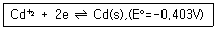
- -0.257
- -0.311
- -0.457
- -0.511
(정답률: 71%)
63. HPLC의 검출기에 대한 설명으로 옳은 것은?
- UV 흡수 검출기는 254nm의 파장만을 사용한다.
- 굴절율 검출기는 대부분의 용질에 대해 감응하나 온도에 매우 민감하다.
- 형광검출기는 대부분의 화학종에 대해 사용이 가능하나 감도가 낮다.
- 모든 HPLC 검출기는 용액의 물리적 변화만을 감응한다.
(정답률: 66%)
64. 전위차법에서 지시전극은 분석물의 농도에 따라 전극전위의 값이 변하는 전극이다. 지시전극에는 금속 지시전극과 막 지시전극이 있다. 다음 중 막 지시전극에 해당하는 것은?
- 은/염화은 전극
- 산화-환원 전극
- 유리전극
- 포화칼로멜전극
(정답률: 69%)
65. 전위차 적정법에 대한 설명으로 틀린 것은?
- 서로 다른 해리도를 갖는 산 또는 염기성 용액의 혼합물을 적정하여 각 화합물의 당량점을 측정할 수 있다.
- 알맞은 지시약이 없는 경우, 착색용액이나 비용매 중에서 적정 당량점을 찾을 수 있다.
- 전위차법은 침전적정법, 착화적정법에 응용할 수 있다.
- 지시약을 전위차법과 함께 사용하면 종말점 예상이 어려워진다.
(정답률: 80%)
66. 전자충격법에 의한 질량분석법으로 물질을 분석할 때 분자 이온의 안정도가 가장 작을 것이라고 생각되는 것은?
- CH3CH2CH3
- CH3CH2OH
- CH3CHO
- CH3COCH3
(정답률: 51%)
67. 모세관 전기이동을 이용하여 시료를 분리하는 주요 원인은 다음 중 어느 것인가?
- 전기삼투와 전기이동
- 모세관 내부에 충전된 고정상에 의한 분리효과
- 고전압에 의한 분리관 내 수소이온 농도의 기울기에 의한 분리
- 모세관에 연결된 고전압 전극의 힘에 의하여 끌려가는 힘
(정답률: 61%)
68. 액체크로마토그래피에서 분리효율을 높이고 분리시간을 단축시키기 위해 기울기용리법(gradient elution)을 사용한다. 이 방법에서는 용매의 어떤 성질을 변화시켜 주는가?
- 극성
- 분자량
- 끓는점
- 녹는점
(정답률: 80%)
69. 백금(Pt)전극을 써서 수소이온을 발생시키는 전기량 적정법으로 염기수용액을 정량할 때 전해용액으로서 적당한 것은?
- 0.10M Ce2(SO4)3수용액
- 0.01M FeSO4
- 0.08M TiCl3
- 0.10M NaCl 또는 Na2SO4
(정답률: 73%)
70. 기체크로마토그래피법에서의 시료의 주입방법은 크게 분할주입과 비분할주입으로 나뉜다. 다음 중 분할주입(split injection)에 대한 설명이 아닌 것은?
- 열적으로 안정하다.
- 기체시료에 적합하다.
- 고농도 분석물질에 적합하다.
- 불순물이 많은 시료를 다룰 수 있다.
(정답률: 61%)
71. [그래프]는 항생제 클로람페니콜(RNO2) 2mM용액의 순환전압전류곡선이다. 0.0V에서 주사를 시작하여 피크 A를 얻었고, 이어서 B와 C를 순서대로 얻었다. 이 피크들이 나타나는 이유는 다음과 같다. 다음 설명 중 틀린 것은?
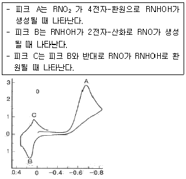
- 피크 A의 반응은 비가역반응이다.
- 0.4V에서 주사를 시작하면 피크 C가 첫 번째로 나타난다.
- 반대 방향으로 주사를 시작하면, 피크 B는 나타나지 않는다.
- 10회 전압 순환동안 피크 B의 크기는 변하지 않는다.
(정답률: 57%)
72. 용액 중 이온들이 전극표면으로 이동하는 주요 과정이 아닌 것은?
- 확산
- 전기이동
- 대류
- 화학반응성
(정답률: 67%)
73. 기체크로마토그래피 검출기 중 니켈-63(63Ni)과 같은 β-선 방사체를 사용하며, 할로겐과 같은 전기 음성도가 큰 작용기를 지닌 분자에 특히 감도가 좋고 시료를 크게 변화시키지 않는 검출기는?
- 불꽃 이온화 검출기(FID; flame ionization detector)
- 전자 포착 검출기(ECD; electron capture detector)
- 원자 방출 검출기(AED; atomic emission detector)
- 열전도도 검출기(TCD; thermal conductivity detector)
(정답률: 79%)
74. 10cm 관에 물질 A와 B의 분리 할 때 머무름 시간은 각각 10분과 12분이고, A와 B의 봉우리 나비는 각각 1.0분과 1.1분이다. 관의 분리능을 계산하면?
- 1.5
- 1.9
- 2.1
- 2.5
(정답률: 70%)
75. 시차주사 열량법(differential scanning calorimetry, DSC)에서 시료온도를 일정한 속도로 변화시키면서 시료와 기준으로 흘러들어오는 열 흐름의 차이가 측정되는 기기장치는?
- 전력-보상 DSC기기(power-compensated DSC instrument)
- 열-플럭스 DSC기기(heat-flux DSC instrument)
- 변조 DSC기기(modulated DSC instrument)
- 시차 열 분석기기(differential thermal analytical instrument)
(정답률: 58%)
76. 열무게 측정장치의 구성이 아닌 것은?
- 단색화장치
- 온도 감응장치
- 저울
- 전기로
(정답률: 79%)
77. 벗김 분석(Stripping Method)이 감도가 좋은 이유는?
- 전극을 커다란 수은방울을 사용하기 때문이다.
- 농축단계에서 사전에 전극에 금속이온을 농축하기 때문이다.
- 전극에 높은 전위를 가하기 때문이다.
- 전극의 전위를 빠른 속도로 주사하기 때문이다.
(정답률: 73%)
78. 유도결합 플라스마(ICP) 원자방출 광원장치는 원자 방출 및 질량분석기와 결합하여, 금속의 정성 및 정량에 많이 사용되고 있다. 이 ICP에 대한 설명으로 틀린 것은?
- 무전극으로 광원을 발생시켜, 기존의 다른 방출광원보다 오염가능성이 적다
- 불활성 기체를 사용하여 광원을 발생시켜, 산화물 분자들의 간섭을 줄였다.
- 상대적으로 이온이 많이 발생하여, 쉽게 이온화되는 원소들에 의한 영향이 크다.
- 고온으로서 원자화 및 여가상태로 만드는 효율이 높다.
(정답률: 72%)
79. Van Deemter 식으로부터 얻을 수 있는 가장 유용한 정보는 무엇인가?
- 이동상의 적절한 유속(flow rate)을 알 수 있다.
- 정지상의 적절한 온도(temperature)를 알 수 있다.
- 선택계수(α, selectivity coefficient)를 알 수 있다.
- 분석물질의 머무름 시간(retention time)을 알 수 있다.
(정답률: 76%)
80. 분자량이 50.00 과 50.01 인 물질을 질량분석기에서 분리하기 위하여 최소한 어느 정도의 분리능을 가진 질량분석기를 사용해야 하는가?
- 100.5
- 1000.5
- 5000.5
- 10000.5
(정답률: 73%)